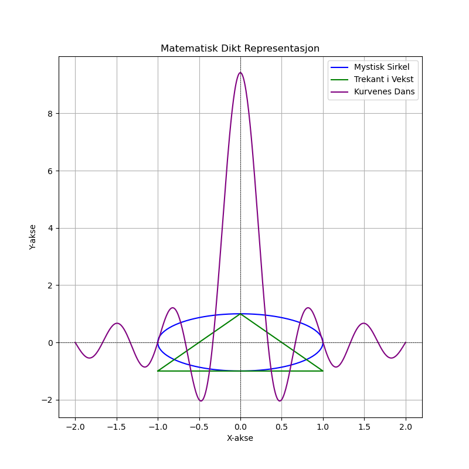

Dagens dikt
En fjern, mystisk sirkel, den har sin trøst
Hvor linjer møtes i evig protest
En trekant i vekst, med bratte fjells topp
Mens kurver danser, aldri vil de stoppe opp
Sett prikker på brettet, lik stjernebildenes prakt
Så la dem gi form, til geometriens makt
Matematikkens visdom, abstrakt og bred
Født i diktets linjer, nå kledd i Pythonnettsted
---

Kode
import numpy as np
import matplotlib.pyplot as plt
# Generate circles
theta = np.linspace(0, 2 * np.pi, 100)
circle_x = np.cos(theta)
circle_y = np.sin(theta)
# Generate triangle
triangle_x = [-1, 0, 1, -1]
triangle_y = [-1, 1, -1, -1]
# Create a sine-wave curve for "dance of curves"
x = np.linspace(-2, 2, 500)
curve_y = np.sin(3 * np.pi * x) / x
# Create plot
plt.figure(figsize=(8, 8))
plt.plot(circle_x, circle_y, label="Mystisk Sirkel", color='blue')
plt.plot(triangle_x, triangle_y, label="Trekant i Vekst", color='green')
plt.plot(x, curve_y, label="Kurvenes Dans", color='purple')
# Add annotations and beautify
plt.axhline(0, color='black', linewidth=0.5, linestyle='--')
plt.axvline(0, color='black', linewidth=0.5, linestyle='--')
plt.title("Matematisk Dikt Representasjon")
plt.xlabel("X-akse")
plt.ylabel("Y-akse")
plt.legend()
plt.grid(True)
# Show plot
plt.savefig('2025-03-20-20-02-11.png')